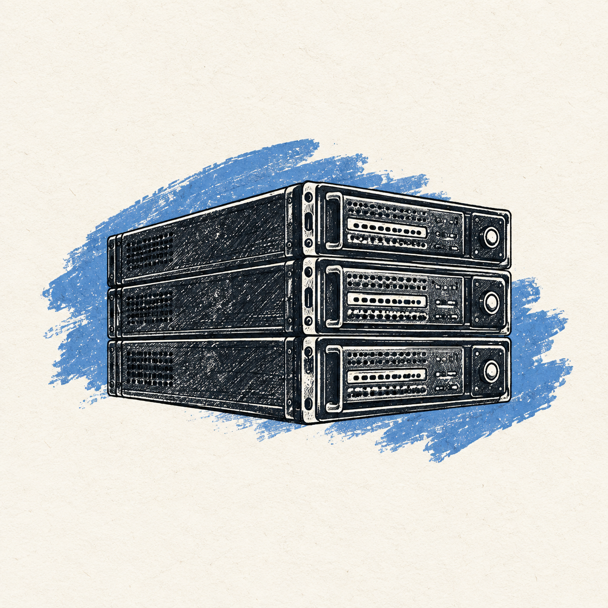

Choose tools with a clearer head.
Practical, opinionated guides to the software behind your work—so you can compare the trade-offs before you commit.
START WITH THE QUESTION
What are you trying to make easier?
Skip the noise. Begin with the decision in front of you.

01FOUNDATIONS
Websites & hosting
Domains, renewals, ownership, and the decisions that make a site easier to run.
BETTER WORKFLOWS
AI & automation
Choose an assistant that fits your content, customers, and actual workflow.
MAKE THE THING
Creative workflows
A clearer path from the first idea to a finished piece of content.
THE READING LIST
One useful decision at a time.
Short checklists, real trade-offs,
no magic-promise marketing.
- 01Compare hosting without missing renewal costsHosting
- 02Build a repeatable short-form video workflowCreator
- 03Plan a WordPress or WooCommerce launchCommerce
- 04Choose family reading resources thoughtfullyReading
- 05Plan a no-code landing page before you buildWebsites
- 06Choose an AI website assistant responsiblyAI
- 07Compare AI website builders by ownershipAI
- 08Check music rights before monetized videoRights
- 09Choose between an AI assistant and live chatAI
- 10Compare SiteMind plans before you subscribeAI
- 11Add a grounded AI assistant to client sitesAgency
- 12Choose the right level of resume helpCareer
- 13Compare focused resume help with broader supportCareer
- 14Choose an AI assistant for a small businessSmall business
- 15Choose an AI website builder for a small businessSmall business
- 16Keep a small-business site healthy after launchServices
- 17Compare HubSpot's free and paid plansSmall business
A NOTE FROM GIORGI
Useful advice starts with the right questions.
I build websites. These are the questions I look at when choosing the tools behind them: what does it do well, what will it cost over time, and how easy is it to move on?
Use these guides as a starting point for your own decision. Where a link may earn me a commission, you’ll see a disclosure alongside it.
More about my work